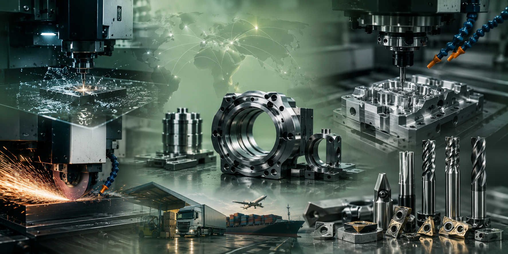

Tecnología, experiencia e ingeniería para fabricar componentes, matrices y herramientas de máxima calidad.

Contamos con equipos de electroerosión de última generación que permiten fabricar piezas imposibles de mecanizar mediante procesos convencionales.
Fabricamos matrices para diferentes procesos productivos garantizando durabilidad, precisión dimensional y excelente rendimiento.


Realizamos rectificados planos y cilíndricos garantizando tolerancias mínimas y excelentes terminaciones superficiales para todo tipo de componentes industriales.
Fabricamos y recuperamos herramientas de carburo de tungsteno para aplicaciones donde la resistencia al desgaste y la precisión son fundamentales.


Nuestro equipamiento CNC permite fabricar piezas complejas con repetibilidad, rapidez y un excelente nivel de terminación.
Cada industria presenta desafíos diferentes. Diseñamos y fabricamos piezas especiales según planos, muestras o necesidades particulares.

Contactanos y trabajemos juntos en una solución de ingeniería adaptada a tus necesidades.
Solicitar Presupuesto